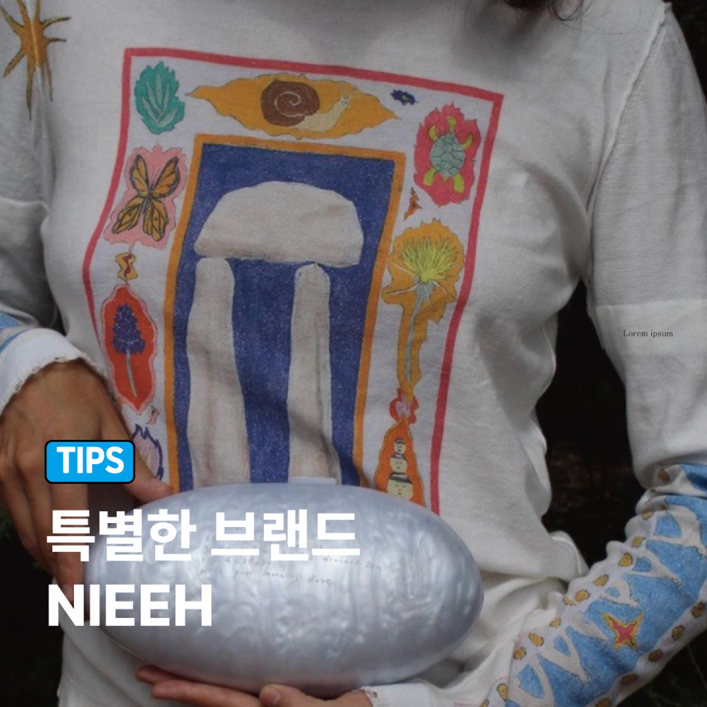

행운쿠키
행운쿠키, 응원쿠키, 졸업 선물, 새해 선물처럼 작은 응원과 기분 좋은 메시지를 전하고 싶을 때 가장 먼저 잘 맞아요.
- 작은 응원과 감사 인사를 전하기 좋음
- 개별포장 흐름으로 나누기 쉬움
- 가벼운선물과 디저트답례품 검색 흐름에 적합
행운쿠키, 응원쿠키, 감사선물, 가벼운선물처럼 너무 무겁지 않지만 분명하게 마음이 전달되어야 하는 선물은 "한입 응원"에 가까운지, "조금 더 선물 같은 패키지"가 필요한지부터 나누면 쉬워요.

작은 한입 선물인지, 조금 더 패키지처럼 보이는 선물인지에 따라 추천 제품이 달라져요.
행운쿠키, 응원쿠키, 졸업 선물, 새해 선물처럼 작은 응원과 기분 좋은 메시지를 전하고 싶을 때 가장 먼저 잘 맞아요.
조금 더 선물처럼 보이는 간식세트나 감사선물 흐름이 필요하면 수제쿠키 패키지가 더 잘 맞는 경우가 많아요.
졸업, 승진, 새해 인사처럼 이름이나 짧은 문구 포인트가 더 필요하면 커스텀형 브라우니가 자연스럽게 이어져요.
행운과 응원은 크기보다도 전달 방식이 중요해요. 가볍게 건네는 한입 선물인지, 조금 더 패키지형 선물인지부터 나누면 쉬워집니다.
누구에게 잘 맞는지, 졸업이나 감사 선물에도 자연스러운지 많이 물어보세요.